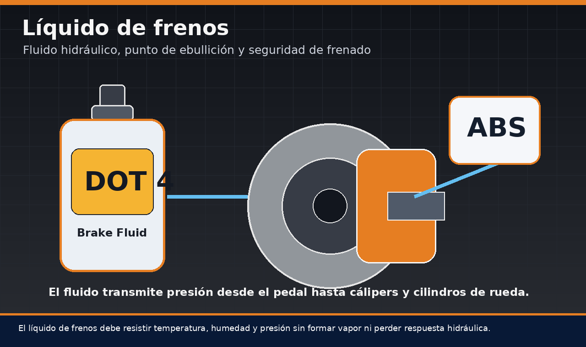
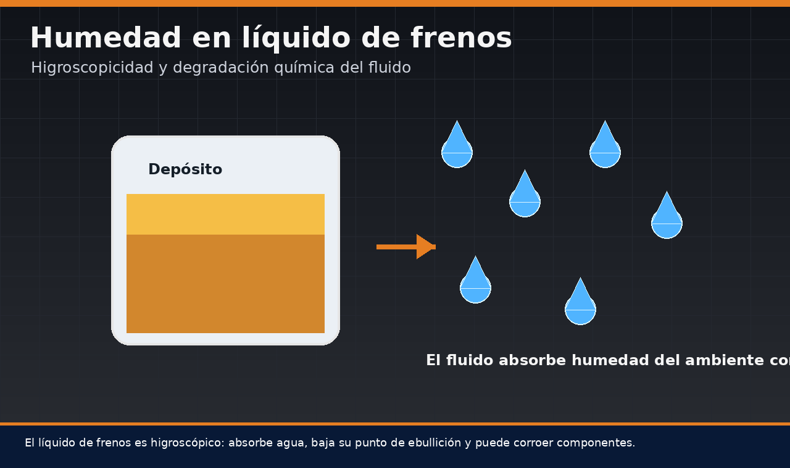
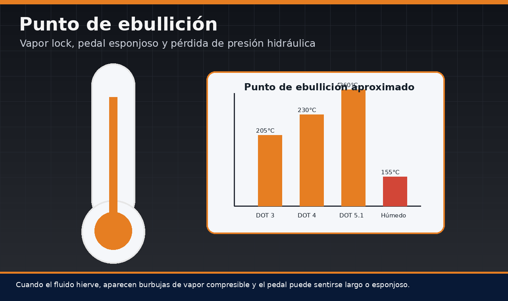
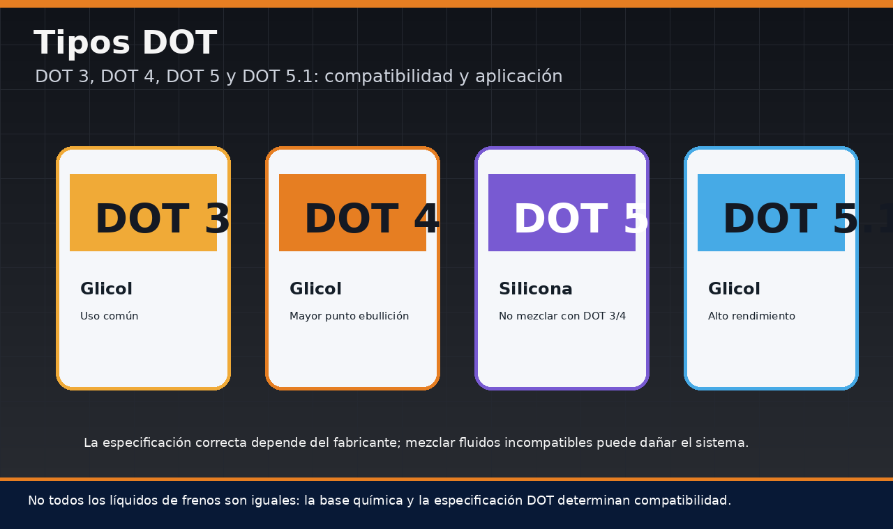
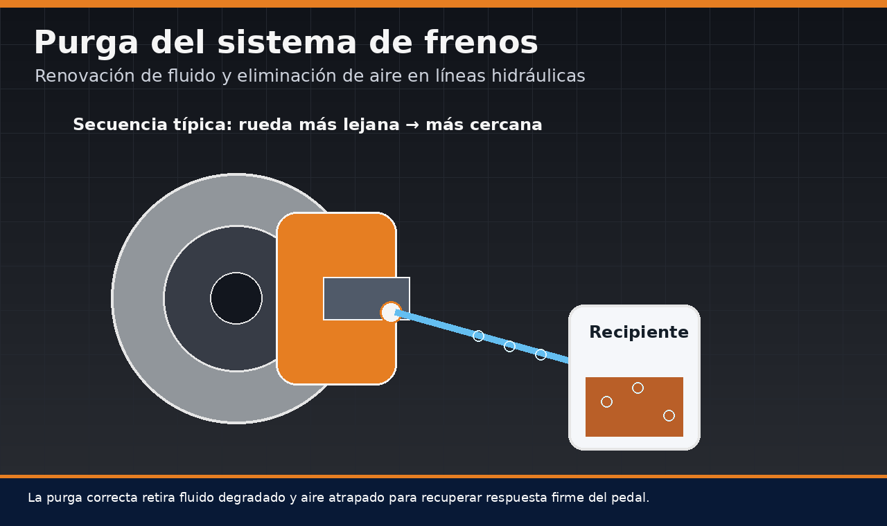
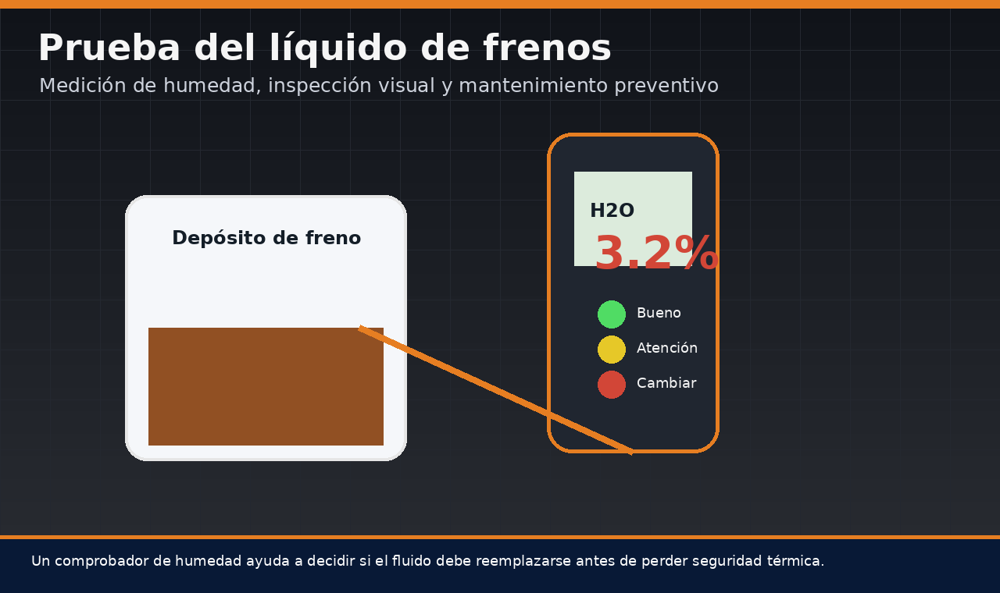
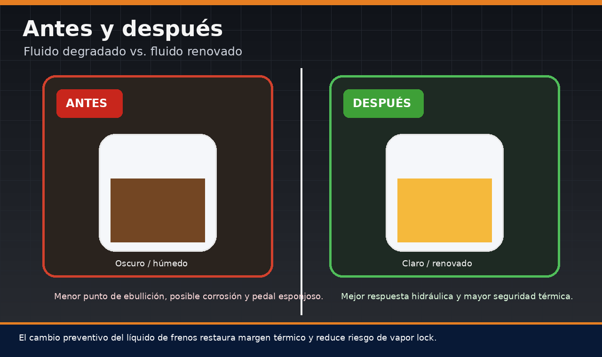

El líquido de frenos es uno de los fluidos más importantes del vehículo, aunque muchas veces recibe menos atención que el aceite del motor, el refrigerante o el fluido de transmisión. Su función principal es transmitir la fuerza aplicada sobre el pedal hacia los cálipers, cilindros de rueda o módulos hidráulicos del sistema. En otras palabras, cuando el conductor presiona el pedal, el líquido de frenos permite que esa fuerza se convierta en presión hidráulica capaz de accionar las pastillas contra el disco o las zapatas contra el tambor.
Comprender para qué sirve el líquido de frenos, cómo funciona y cuándo cambiarlo es fundamental para evitar pérdida de respuesta, pedal esponjoso, corrosión interna, sobrecalentamiento y fallas de frenado. Esta guía también explica los tipos de líquido de frenos, la diferencia entre DOT 3, líquido de frenos DOT 4, DOT 5 y DOT 5.1, además de aspectos prácticos como líquido de frenos precio, líquido de frenos para auto, líquido de frenos para carro y líquido de frenos para moto.

Contenido del artículo
- Capítulo 1: Para qué sirve el líquido de frenos
- Capítulo 2: Líquido de frenos cómo funciona
- Capítulo 3: Composición del líquido de frenos y humedad
- Capítulo 4: Punto de ebullición y pedal esponjoso
- Capítulo 5: Tipos de líquido de frenos DOT 3, DOT 4, DOT 5 y DOT 5.1
- Capítulo 6: Líquido de frenos para carro, auto y moto
- Capítulo 7: Cambio, purga y prueba del líquido de frenos
- Capítulo 8: Precio, mantenimiento y conclusión técnica
Capítulo 1: Para qué Sirve el Líquido de Frenos
La pregunta “líquido de frenos para qué sirve” tiene una respuesta aparentemente simple: sirve para transmitir presión. Sin embargo, desde el punto de vista técnico, su función es mucho más compleja. Este fluido debe trabajar bajo presión, resistir altas temperaturas, mantener estabilidad química, proteger componentes metálicos, lubricar sellos internos y conservar una viscosidad adecuada incluso en condiciones variables de uso.
En un sistema hidráulico de frenos, el pedal acciona el cilindro maestro. Este cilindro desplaza líquido dentro de las líneas hidráulicas y genera presión. Como el líquido es prácticamente incompresible, esa presión viaja hasta los cálipers o cilindros de rueda, donde se transforma en fuerza mecánica de frenado. Si el fluido contiene aire, vapor o humedad excesiva, la transmisión de presión se vuelve menos eficiente y el pedal puede sentirse largo, blando o esponjoso.
Por eso, el líquido de frenos no debe evaluarse únicamente por su nivel en el depósito. Puede estar al nivel correcto y aun así estar degradado. Un fluido viejo puede tener humedad, menor punto de ebullición, color oscuro, contaminantes internos o capacidad reducida para proteger el sistema. Esta degradación no siempre se nota en conducción suave, pero puede aparecer durante una bajada prolongada, una frenada fuerte o uso intensivo del vehículo.
Capítulo 2: Líquido de Frenos Cómo Funciona
Cuando se busca “líquido de frenos cómo funciona”, la explicación debe partir del principio de Pascal. En un fluido confinado, la presión aplicada se transmite en todas direcciones. Esto permite que una fuerza relativamente pequeña aplicada por el conductor se multiplique a través del sistema hidráulico y genere una presión suficiente para detener el vehículo.
El funcionamiento puede resumirse así: el conductor presiona el pedal, el servofreno amplifica la fuerza, el cilindro maestro desplaza el fluido, las líneas hidráulicas transportan presión y los cálipers convierten esa presión en movimiento mecánico de las pastillas. Si el vehículo tiene ABS, el líquido también pasa por un módulo hidráulico capaz de modular presión durante frenadas críticas.
En condiciones normales, el líquido de frenos debe responder de forma inmediata. Si el pedal baja demasiado, se siente elástico o requiere bombeo, puede existir aire en el sistema, fluido degradado, fuga, cilindro maestro defectuoso o problemas en el circuito hidráulico. Por eso, cualquier cambio en la sensación del pedal debe tomarse como una señal de advertencia.
2.1 Presión hidráulica y seguridad
La presión generada en el sistema puede ser muy elevada durante una frenada fuerte. Por ello, el líquido debe mantener sus propiedades bajo carga térmica y mecánica. Si se forman burbujas de vapor, el sistema pierde rigidez hidráulica porque el vapor sí es compresible. Esto puede generar una condición peligrosa conocida como vapor lock, donde el pedal se hunde y la respuesta de frenado disminuye.
Capítulo 3: Composición del Líquido de Frenos y Humedad
La búsqueda “líquido de frenos composición” es importante porque no todos los fluidos son iguales. La mayoría de los líquidos DOT 3, DOT 4 y DOT 5.1 están formulados sobre bases de glicoles y éteres de glicol. Estos compuestos permiten buena estabilidad térmica, compatibilidad con sellos y adecuada transmisión hidráulica. Sin embargo, también tienen una característica clave: son higroscópicos.
Higroscópico significa que el fluido absorbe humedad del ambiente. Aunque el sistema de frenos parezca cerrado, pequeñas cantidades de vapor de agua pueden ingresar con el tiempo a través de respiraderos, mangueras flexibles, sellos y tapas del depósito. Esa humedad se mezcla con el líquido y modifica sus propiedades internas.
Por qué la humedad es peligrosa
Cuando el líquido absorbe agua, su punto de ebullición disminuye. Esto significa que el fluido puede hervir a una temperatura más baja durante frenadas intensas. Además, la humedad favorece corrosión en cilindros, líneas metálicas, pistones, válvulas del módulo ABS y otros componentes internos.
Un fluido contaminado con agua también puede cambiar de color y volverse más oscuro. Aunque el color por sí solo no es una prueba definitiva, sí puede ser una señal de envejecimiento, oxidación o arrastre de partículas internas. Por eso, la inspección visual debe complementarse con pruebas de humedad o con intervalos preventivos de cambio.

Capítulo 4: Punto de Ebullición y Pedal Esponjoso
El punto de ebullición es una de las propiedades más importantes del líquido de frenos. Durante una frenada, la fricción entre pastillas y discos genera calor. Parte de ese calor se transmite al cáliper y luego al fluido. Si la temperatura supera la capacidad térmica del líquido, se forman burbujas de vapor dentro del circuito.
El problema es que el vapor se comprime. Mientras el líquido transmite presión con muy poca compresión, una burbuja de vapor actúa como un resorte. El pedal puede sentirse largo, blando, esponjoso o incluso perder efectividad temporal. Esta condición es especialmente peligrosa en descensos prolongados, conducción deportiva, remolque, carga pesada o frenadas repetidas.
Punto seco y punto húmedo
Los fabricantes suelen indicar un punto de ebullición seco y uno húmedo. El punto seco corresponde al fluido nuevo, sin humedad significativa. El punto húmedo representa el comportamiento del fluido después de absorber cierta cantidad de agua. En la práctica, el punto húmedo es muy importante porque refleja mejor el estado de un líquido usado.
Un líquido de frenos degradado puede seguir funcionando en ciudad, pero fallar bajo exigencia térmica. Por eso, no conviene esperar a que el pedal se vuelva esponjoso para reemplazarlo. El mantenimiento preventivo reduce el riesgo de pérdida de presión y protege componentes internos.

Capítulo 5: Tipos de Líquido de Frenos DOT 3, DOT 4, DOT 5 y DOT 5.1
Otra búsqueda común es “tipos de líquido de frenos”. La clasificación más conocida es DOT, establecida según propiedades como punto de ebullición, viscosidad y composición. Los fluidos más comunes en vehículos de uso cotidiano son DOT 3 y líquido de frenos DOT 4. También existen DOT 5 y DOT 5.1, pero no deben confundirse.
Diferencias entre DOT
El DOT 3 suele utilizarse en sistemas convencionales con exigencia moderada. El líquido de frenos DOT 4 ofrece generalmente mayor punto de ebullición y es muy usado en vehículos modernos, sistemas con ABS y condiciones más exigentes. El DOT 5 es de base silicona y no debe mezclarse con DOT 3 o DOT 4. El DOT 5.1, aunque su nombre se parece al DOT 5, normalmente es de base glicol y puede tener características de alto rendimiento según especificación.
La regla principal es seguir la recomendación del fabricante del vehículo. Usar un líquido incorrecto puede afectar sellos, compatibilidad química, respuesta del ABS o estabilidad térmica. No se debe elegir solo por precio o por creer que un número más alto siempre es mejor para cualquier sistema.

Capítulo 6: Líquido de Frenos para Carro, Auto y Moto
Las búsquedas “líquido de frenos para carro”, “líquido de frenos para auto” y “líquido de frenos para moto” suelen parecer iguales, pero hay diferencias de aplicación. En automóviles, el sistema puede incluir ABS, control de estabilidad, mayor masa y más capacidad térmica. En motocicletas, el volumen del sistema es menor, pero la sensibilidad de frenado y la exposición del fluido a condiciones ambientales también son críticas.
En un carro o auto, el líquido debe ser compatible con el sistema hidráulico, el módulo ABS y los sellos internos. En una moto, la recomendación del fabricante es todavía más importante, porque el sistema puede tener depósitos pequeños y una respuesta de maneta muy sensible. Usar un líquido inadecuado puede alterar tacto, temperatura de trabajo o compatibilidad con componentes.
6.1 Líquido de frenos para moto
Cuando alguien pregunta para qué sirve el líquido de frenos moto, la respuesta es la misma en principio: transmitir presión hidráulica desde la maneta o pedal hacia el cáliper. Sin embargo, en una moto la pérdida de firmeza puede sentirse de manera más directa. Una maneta esponjosa, recorrido excesivo o pérdida de presión en frenadas repetidas deben revisarse de inmediato.
Muchas motos usan DOT 4, pero no todas. Algunas aplicaciones pueden especificar DOT 3 o DOT 5.1. Siempre debe revisarse la tapa del depósito, manual del fabricante o ficha técnica. También debe cuidarse el contacto del líquido con pintura o plásticos, porque los fluidos a base de glicol pueden dañar acabados superficiales.
6.2 Líquido de frenos para auto o carro
En autos modernos con ABS y control de estabilidad, el fluido debe mantener viscosidad adecuada para que las válvulas del módulo hidráulico puedan actuar correctamente. Un líquido viejo, contaminado o incorrecto puede afectar la rapidez de respuesta del sistema y contribuir a fallas internas a largo plazo.
Capítulo 7: Cambio, Purga y Prueba del Líquido de Frenos
Cambiar el líquido de frenos no consiste únicamente en rellenar el depósito. El relleno solo compensa nivel, pero no elimina fluido viejo de líneas, cálipers, cilindros ni módulo ABS. Para renovar correctamente el sistema, se debe purgar hasta reemplazar el fluido degradado por fluido nuevo, evitando entrada de aire.
Purga del sistema hidráulico
La purga permite expulsar aire y fluido contaminado. Dependiendo del vehículo, puede realizarse por gravedad, con bombeo manual, por presión, por vacío o mediante equipo especializado. En algunos vehículos con ABS, puede requerirse activación del módulo mediante escáner para mover válvulas internas y renovar fluido atrapado en canales hidráulicos.
El orden de purga puede variar según diseño del circuito. Una regla común es comenzar por la rueda más lejana al cilindro maestro y avanzar hacia la más cercana, pero siempre conviene consultar el procedimiento específico del fabricante. Una purga mal realizada puede introducir aire y empeorar el pedal.

Prueba de humedad y diagnóstico preventivo
Un comprobador de líquido de frenos puede estimar el porcentaje de humedad. Aunque no reemplaza una evaluación completa, ayuda a decidir si el fluido ya perdió margen de seguridad. También se puede inspeccionar color, olor, presencia de partículas y comportamiento del pedal.
Si el líquido está oscuro, contaminado o con alta humedad, el cambio preventivo es recomendable. No debe esperarse a que el sistema falle. Un mantenimiento programado es más económico que reparar corrosión interna, módulo ABS dañado o pérdida de presión en una situación crítica.

Capítulo 8: Precio, Mantenimiento y Conclusión Técnica
La búsqueda “líquido de frenos precio” o “líquido de freno precio” suele depender del tipo DOT, marca, presentación, país y si se compra solo el fluido o se paga un servicio completo de cambio y purga. El precio del líquido por sí solo no debe ser el único criterio: también importa la especificación, fecha de fabricación, envase sellado y compatibilidad con el vehículo.
El líquido de frenos precio puede variar bastante entre DOT 3, DOT 4, DOT 5.1 o fluidos de alto rendimiento. Además, el costo del servicio puede aumentar si el sistema requiere purga completa, activación del ABS con escáner, limpieza de depósito, reparación de fugas o sustitución de componentes dañados. En todo caso, reemplazar el fluido a tiempo suele ser mucho más económico que reparar un sistema contaminado o corroído.
Antes y después del cambio de fluido
Un fluido viejo puede presentar color oscuro, humedad elevada y menor resistencia térmica. Después del cambio, el sistema recupera mayor margen contra ebullición, mejor tacto de pedal y menor riesgo de corrosión interna. La diferencia no siempre se percibe en una frenada suave, pero puede ser decisiva en uso exigente.
El mantenimiento preventivo del líquido de frenos debe formar parte de la rutina general del vehículo. Revisar pastillas y discos sin evaluar el fluido deja incompleta la inspección del sistema. El líquido es el medio que transmite toda la presión; si está degradado, el sistema completo pierde confiabilidad.

8.1 Cuándo cambiar el líquido de frenos
Muchos fabricantes recomiendan cambiar el líquido de frenos cada cierto período, frecuentemente alrededor de dos años, aunque el intervalo exacto depende del vehículo, clima, uso y especificación. En zonas húmedas, vehículos exigidos o sistemas con alto estrés térmico, puede ser necesario revisarlo con mayor frecuencia.
También debe considerarse el cambio si el pedal se siente esponjoso, si se realizó reparación hidráulica, si el fluido está oscuro, si el nivel bajó sin causa clara, si hubo contaminación accidental o si el comprobador indica humedad elevada. En motos, la sensación de maneta también puede orientar, pero no sustituye la inspección técnica.